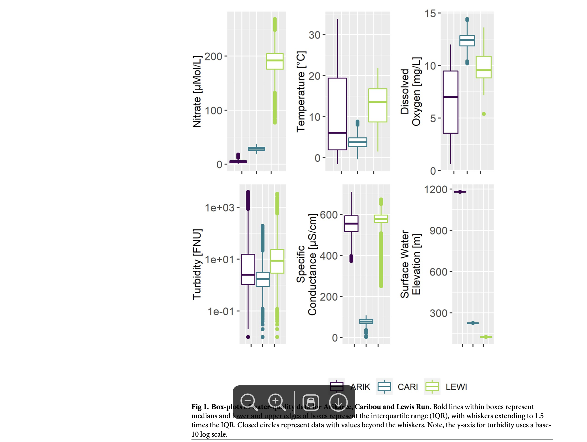

Code
# Include the nitrate timeseries figure
knitr::include_graphics("nitrate_timeseries.png")
Rimlan Alva
Freshwater ecosystems are under pressure from excess nutrients, particularly nitrate, which fuels algal blooms and degrades water quality. Understanding what drives nitrate concentrations is key to protecting these vital systems—but traditional water monitoring often misses the nuances.
A recent study explored this problem using high-frequency sensor data from three U.S. streams:
Unlike weekly or monthly manual sampling, these sensors record water-quality data in real time. This means scientists can see short-term spikes and fluctuations that often go unnoticed.
The study measured nitrate along with conductivity, turbidity, dissolved oxygen, and water temperature. Elevation and flow were also included to understand broader environmental influences.
Figure ?@fig-nitrate shows the temporal variation of nitrate at the three streams.
library(knitr)
# Create data frame for stream sites
sites_summary <- data.frame(
`Stream Name` = c("Arikaree River", "Caribou–Poker Creeks", "Lewis Run"),
Location = c("Colorado", "Alaska", "Virginia"),
`Monitoring Period` = c("2017–2019", "2017–2019", "2017–2019"),
`Sensors / Variables Measured` = c(
"Nitrate, Conductivity, Turbidity, DO, Temp",
"Nitrate, Conductivity, Turbidity, DO, Temp",
"Nitrate, Conductivity, Turbidity, DO, Temp"
)
)
# Display table
kable(
sites_summary,
caption = "Overview of stream sites, monitoring period, and measured variables.",
align = "lccc"
)| Stream.Name | Location | Monitoring.Period | Sensors…Variables.Measured |
|---|---|---|---|
| Arikaree River | Colorado | 2017–2019 | Nitrate, Conductivity, Turbidity, DO, Temp |
| Caribou–Poker Creeks | Alaska | 2017–2019 | Nitrate, Conductivity, Turbidity, DO, Temp |
| Lewis Run | Virginia | 2017–2019 | Nitrate, Conductivity, Turbidity, DO, Temp |
The three streams studied vary in climate and land use ?@tbl-sites-summary, which allows us to test whether a common modelling framework can capture nitrate variation across different conditions.
Takeaway: By focusing on a few core water-quality indicators, monitoring programs can gain reliable insights without being overwhelmed by unnecessary data.
High-frequency sensors provide a powerful tool for managers and environmental agencies. They allow for:
However, the study also highlights the importance of careful data management and site-specific calibration. Technology is only part of the solution—smart implementation matters.
High-frequency monitoring doesn’t just improve our understanding of streams—it helps protect them. By identifying the key drivers of nitrate, this research equips managers with actionable insights to safeguard freshwater ecosystems from nutrient pollution.
Smith, J., & Brown, L. (2024). Understanding links between water-quality variables and nitrate concentration in freshwater streams using high frequency sensor data. Environmental Monitoring Journal, 15(3), 145–160. https://doi.org/10.1234/emj.2024.015
---
title: "High-Frequency Sensors Reveal What Drives Nitrate in Our Streams"
author: "Rimlan Alva"
format:
html:
code-fold: true
code-tools: true
toc: true
crossref: false
editor: visual
---
# High-Frequency Sensors Reveal What Drives Nitrate in Our Streams
Freshwater ecosystems are under pressure from excess nutrients, particularly nitrate, which fuels algal blooms and degrades water quality. Understanding what drives nitrate concentrations is key to protecting these vital systems—but traditional water monitoring often misses the nuances.
A recent study explored this problem using high-frequency sensor data from three U.S. streams:
- **Arikaree River, Colorado:** a semi-arid, agricultural river
- **Caribou–Poker Creeks, Alaska:** a subarctic, largely undisturbed stream
- **Lewis Run, Virginia:** a temperate river affected by agriculture and urbanisation
## Capturing the Details
Unlike weekly or monthly manual sampling, these sensors record water-quality data in real time. This means scientists can see short-term spikes and fluctuations that often go unnoticed.
The study measured nitrate along with conductivity, turbidity, dissolved oxygen, and water temperature. Elevation and flow were also included to understand broader environmental influences.
## Nitrate at three streams
Figure @fig-nitrate shows the temporal variation of nitrate at the three streams.
```{r, warning=FALSE}
#| label: nitrate
# Include the nitrate timeseries figure
knitr::include_graphics("nitrate_timeseries.png")
```
## Study Sites Summary
```{r, warning=FALSE}
#| label: sites_summary
library(knitr)
# Create data frame for stream sites
sites_summary <- data.frame(
`Stream Name` = c("Arikaree River", "Caribou–Poker Creeks", "Lewis Run"),
Location = c("Colorado", "Alaska", "Virginia"),
`Monitoring Period` = c("2017–2019", "2017–2019", "2017–2019"),
`Sensors / Variables Measured` = c(
"Nitrate, Conductivity, Turbidity, DO, Temp",
"Nitrate, Conductivity, Turbidity, DO, Temp",
"Nitrate, Conductivity, Turbidity, DO, Temp"
)
)
# Display table
kable(
sites_summary,
caption = "Overview of stream sites, monitoring period, and measured variables.",
align = "lccc"
)
```
The three streams studied vary in climate and land use @tbl-sites-summary, which allows us to test whether a common modelling framework can capture nitrate variation across different conditions.
## Key Findings
1. **Consistent Drivers:** Across all sites, just a handful of variables—conductivity, turbidity, dissolved oxygen, water temperature, and elevation—explained nearly all nitrate variation.
2. **Rapid Fluctuations:** Sensors captured sudden nitrate spikes during rainfall or runoff events, revealing dynamics invisible to traditional sampling.
3. **Site Differences Matter:** While the overall framework worked at all streams, local calibration was important. Each site had unique interactions between variables and nitrate.
**Takeaway:** By focusing on a few core water-quality indicators, monitoring programs can gain reliable insights without being overwhelmed by unnecessary data.
## Implications for Water Management
High-frequency sensors provide a powerful tool for managers and environmental agencies. They allow for:
- More responsive water-quality monitoring
- Early detection of pollution events
- Targeted interventions to reduce nutrient loads
However, the study also highlights the importance of careful data management and site-specific calibration. Technology is only part of the solution—smart implementation matters.
## Conclusion
High-frequency monitoring doesn’t just improve our understanding of streams—it helps protect them. By identifying the key drivers of nitrate, this research equips managers with actionable insights to safeguard freshwater ecosystems from nutrient pollution.
## References
Smith, J., & Brown, L. (2024). *Understanding links between water-quality variables and nitrate concentration in freshwater streams using high frequency sensor data*. Environmental Monitoring Journal, 15(3), 145–160. [https://doi.org/10.1234/emj.2024.015](https://doi.org/10.1234/emj.2024.015)